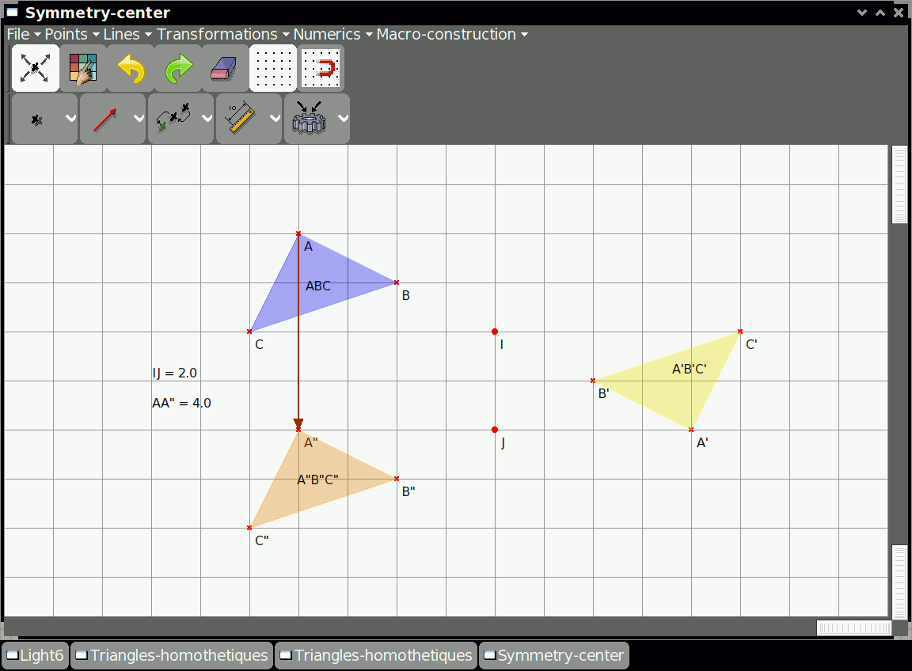

Dr Geo¶


Dr. Geo is an award-winning interactive geometry software for Sugar. It also runs under GNU/Linux, Windows, Mac OS X and Android. Visit its home page http://drgeo.eu to know more about it.
Written entirely in Pharo Smalltalk, Dr. Geo allows one to create a geometric sketch and to manipulate it according to its constraints. It is usable at home or at school, in primary or secondary education level. It is simple and effective with some unique features as scripting and programming.
Why a free Dr. Geo software?
Because equality of access should be granted to the kids all around the world! This is why Dr. Geo runs on Sugar, the system first designed for the XO, the laptop designed for the kids of developing countries.
Where to get Dr Geo¶
Dr Geo activity is available for download from the Sugar Activity Library: Dr Geo
The source code is available on GitHub.
Where to report problems¶
Please report bugs and make feature requests at DrGeo/issues.